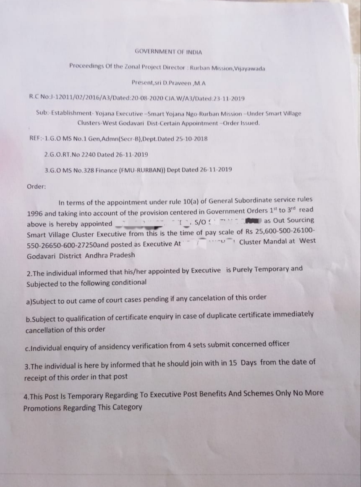
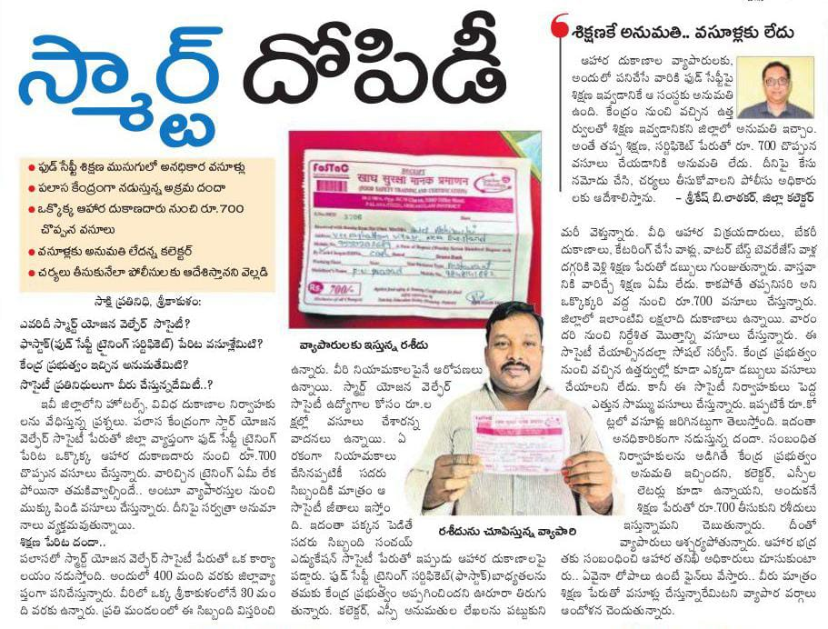
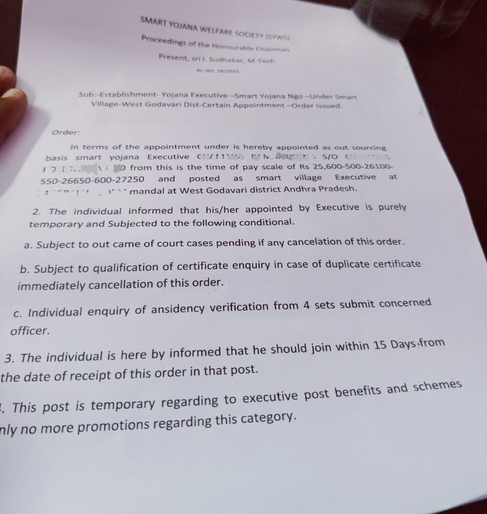
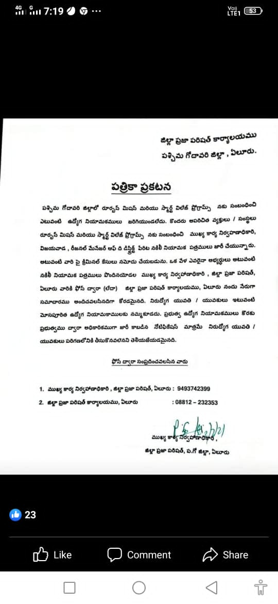
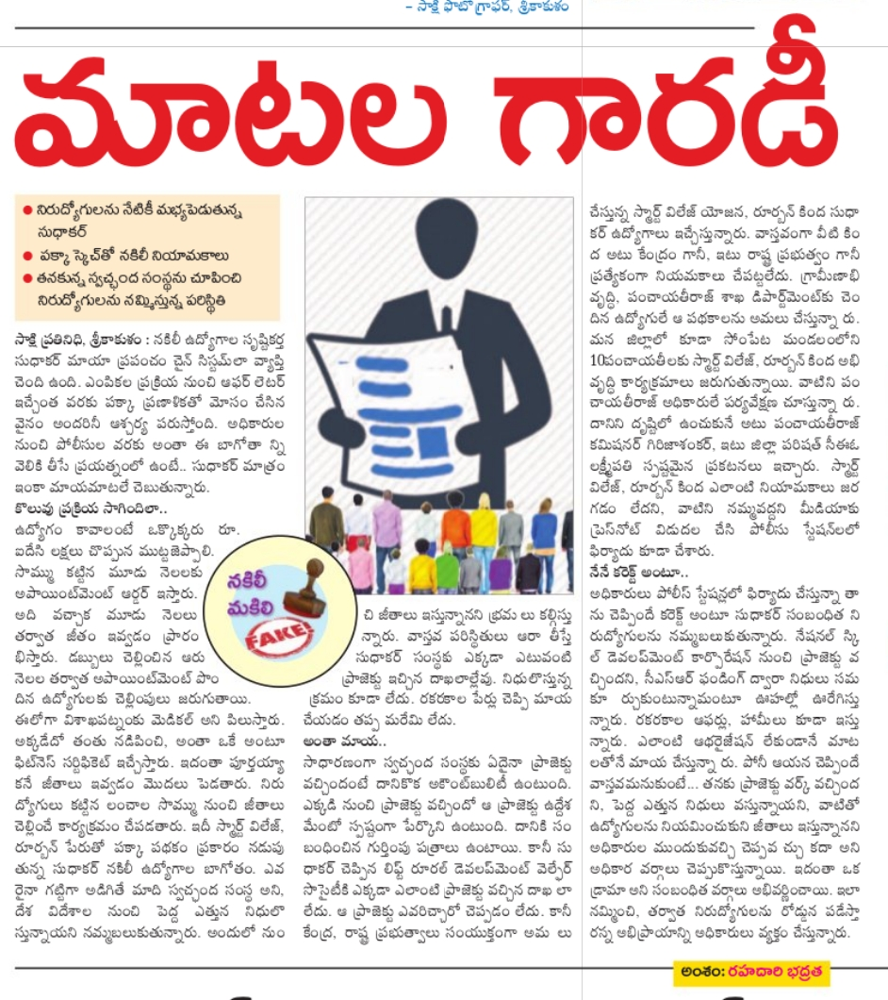
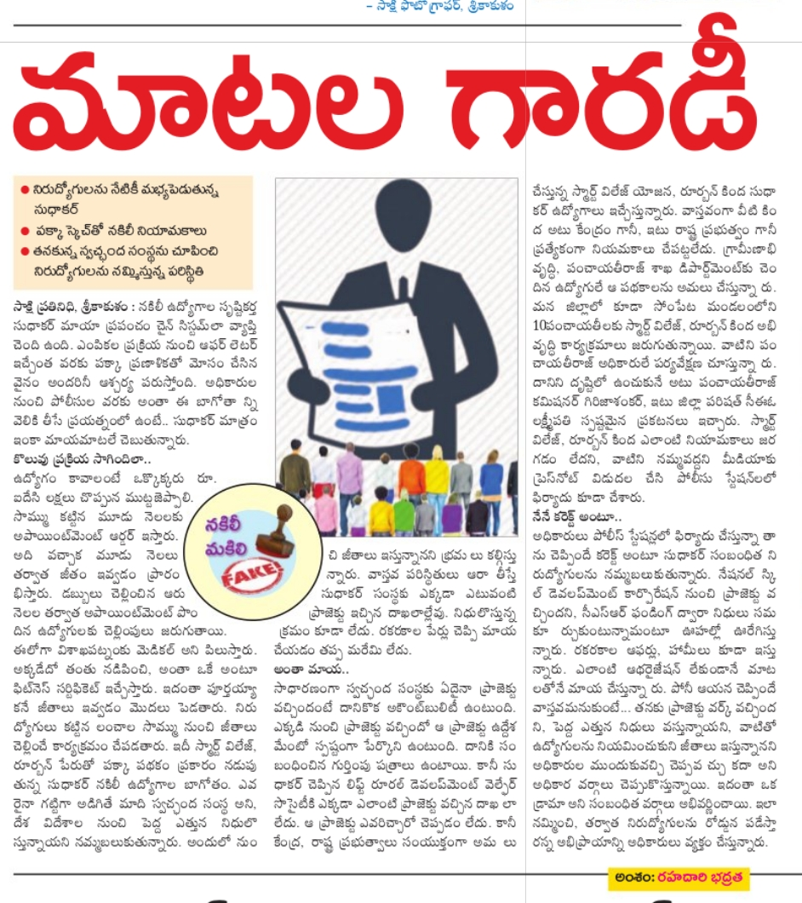

స్మార్ట్ మోసం ! స్మార్ట్ విలేజ్ జాబ్ స్కామ్
ఉద్యోగాలిప్పిస్తామంటూ రూ.లక్షల వసూళ్లు... నకిలీ నియామక పత్రాలు
చదువుకుని ఖాళీగా ఉంటున్నారా... మీ గ్రామానికి సమీపంలోనే పనిచేసే అవకాశం ఇస్తాం.. నెలకు రూ.19 వేల నుండి 25 వేల వరకు జీతం. కేంద్ర ప్రభుత్వ ప్రాజెక్టులో మీ అర్హతకు తగిన ఉద్యోగం. పెద్దగా పని ఉండదు జీతం వచ్చేస్తుంది. కాకపోతే ముందు కొంచెం డబ్బులు ఖర్చవుతాయి.
శ్యామ్ ప్రసాద్ ముఖర్జీ రూర్బన్ మిషన్ ప్రాజెక్టును చూపించి నిరుద్యోగుల నుంచి రూ. లక్షలు వసూలు చేస్తున్నారు. ఏలూరు కేంద్రంగా పశ్చిమ గోదావరి జిల్లాలో, నర్సీపట్నం కేంద్రంగా విశాఖ జిల్లాలో, కాకినాడ కేంద్రంగా తూర్పు గోదావరి జిల్లాలో, విజయవాడ కేంద్రంగా కృష్ణా జిల్లాలో ఈ దందా నడుస్తోంది. స్మార్ట్ విలేజ్, రూజర్బన్ మిషన్ పేరిట అయిదు జిల్లాల్లో నిరుద్యోగులకు గాలం వేస్తున్నారు. వీరి ఉచ్చులో చాలామంది పడినట్లు తెలుస్తోంది.
నియామక పత్రాల్లో అన్ని తప్పులే... : రూఅర్బన్ మిషన్ జోనల్ ప్రాజెక్టు డైరెక్టర్ డి. ప్రవీణ్ పేరిట ప్రొసిడింగ్ జారీచేసినట్లు నియామక పత్రాల్లో ఉంది. రీజనల్ మేనేజర్, స్మార్ట్ విలేజ్, ఏలూరుగా రుత్తల హరిబాబు సంతకం చేశారు. మరో సంతకం సీఈఓ, విజయవాడ, కృష్ణా జిల్లా అని ఉంది. ఇతను ఏ శాఖకు సీఈవో కూడా పేర్కొనలేదు. ఈ ఉత్తర్వుల్లో 2018 అక్టోబర్ 25న జారీచేసిన జీవో ఎంఎస్ నంబర్ 1, అలాగే 2019 నవంబర్ 26న జారీచేసిన జీవో నంబర్ 240, ఎంఎస్ నంబర్ 328 జీవోలు ఈ ప్రాజెక్టులో నియామకాలకు సంబంధించినవిగా చూపించారు. అయితే ఈ మూడు జీవో నంబర్లు ఆయా తేదీల్లో జారీచేయనే లేదు. నిరుద్యోగులను నమ్మించేందుకు తప్పుడు నంబర్లు వేసినట్లు స్పష్టమవుతోంది.
గ్రామీణ ప్రాంతాల్లో ప్రజల జీవన ప్రమాణాలను మెరుగుపరి చేందుకు స్మార్ట్ విలేజ్, రూఆర్బన్ మిషన్ పేరిట కేంద్ర ప్రభుత్వం 2015 లో ఓ కార్యక్రమాన్ని అమలు చేసింది. అయితే ఈ ప్రాజెక్టు తమకు ఇచ్చారని, అందులో అసిస్టెంట్, ఎగ్జిక్యూటివ్ పోస్టులను భర్తీ చేస్తున్నామని నిరుద్యోగుల నుంచి రూ.3 లక్షల నుంచి రూ.5 లక్షల వరకు వసూళ్లు చేస్తున్నారు. నకిలీ నియామక పత్రాలను చేతిలో పెడుతున్నారు. శిక్షణల పేరిట తిప్పుతూ వారితో మరికొందరిని ఈ ఉచ్చులోకి దించుతున్నారు.
గవ్నమెంట్ ఆఫ్ ఆంధ్రప్రదేశ్ పేరుతో ఓ అభ్యర్థికి ఇచ్చిన అపాయింట్మెంట్ లెటర్


గవ్నమెంట్ ఆఫ్ ఇండియా పేరుతో ఓ అభ్యర్థికి ఇచ్చిన అపాయింట్మెంట్ లెటర్
బీబీసీ తెలుగులో స్మార్ట్ విలేజ్ ఉద్యోగాల మోసం పై ప్రచురితం అయిన కథనం
స్మార్ట్ విలేజ్ బాబ్స్ మోసం పై బీబీసీ తెలుగు పూర్తి కథనంDailyhaunt ఆర్టికల్:
Dailyhaunt ఆర్టికల్ABN లోను వచ్చిన ప్రస్తావన
courtesy:ABN
బాధితుల ఆవేదన - ఆందోళన
తమకు దళారులు ఇవి గవ్నమెంట్ ఔట్సౌర్కింగ్ ఉద్యోగాలు అని చెప్పారు అని, టీ.ఏ లు డి.ఏ లు వుంటాయని, PF, ESI వుంటాయని నమ్మబలికారు అని , ఇప్పుడు ఇది ఒక స్వచ్ఛంద సంస్థ అని నియామక పత్రాలు మార్చి Smart Yojana Welfare Society పేరున ఇస్తున్నారని ఎదో Kotak Mahindra Bank లో అకౌంట్ తీసి , PF, ESI లు చేయిస్తాము కొంచెం సమయం పడుతుంది అని కాలయాపన చేస్తున్నారని , జీతాలు కూడా మూడు నాలుగు నెలలకో సారి వేస్తున్నారని, అప్పులు చేసి డబ్బులు ఇచ్చిన వాళ్ళు వడ్డీలు కట్టలేక, ఇంటి కర్చులకు మళ్ళీ అప్పులు చేస్తున్నామని వాపోతున్నారు.
గవర్నమెంట్ ఆఫ్ ఆంధ్ర ప్రదేశ్ మరియు గవ్నమెంట్ ఆఫ్ ఇండియా పేరుతో నియామక పత్రాలు ఇచ్చి, ఇప్పుడేమో స్వచ్ఛంధ సంస్థ అని అంటు తమను మోసం చేశారని, భాదితులు ఆవేదన వ్యక్తం చేస్తున్నారు. మూడు నాలుగు నెలలకోసారి జీతాలు వేస్తున్నారని, అప్పులు చేసి డబ్బులు ఇచ్చిన వాళ్ళు వడ్డీలు కట్టలేక, ఇంటి కర్చులకు మళ్ళీ అప్పులు చేస్తున్నామని వాపోతున్నారు.
అనుమతులు లేని ప్రాజెక్టుల పేరుతో కాలయాపన
- మొదట శ్యామ్ ప్రసాద్ ముఖర్జీ రూర్బన్ మిషన్ ప్రాజెక్ట్ వచ్చింది అని, ముందుగా మీ మండలంలో ఉన్న అంగన్వాడీలు, ప్రైమరీ స్కూల్, హై స్కూల్, ప్రధమ చికిత్స కేంద్రాలు గురించిన లిస్టు తయారు చేసుకోండి అని చెప్పారని, మండలం మొత్తం నెల రోజుల పాటు తిరిగాం అని భాదితులు చెప్తున్నారు.
- తరువాత CLAP క్లీన్ ఆంధ్రప్రదేశ్ ప్రోజెక్ట్ వచ్చింది అని, మున్సిపాలిటీ కి ఒకరు చొప్పున సూపర్వైజర్ ని నియమించారని, కొన్ని రోజులకు ఆ ప్రాజెక్ట్ ఊసే లేదని చెప్తున్నారు.
- మెడికల్ (హెల్త్ కార్డ్) ప్రాజెక్ట్ మనకు వచ్చింది. మీ మండలంలోని ఒక్కో వ్యక్తిని సర్వే చేసినందుకు రూ.70 వస్తాయి. ఇలా సుమారుగా మండలం మొత్తం కలిపి 35 లక్షల రూపాయలు వస్తాయి, అవి నేరుగా ఆ మండలంలోని ఉద్యోగుల బ్యాంక్ ఖాతాల్లోనే జమ అవుతాయి అని ఇండిపూడి సుధాకర్ చెప్పారు.
- Ropts pvt.Ltd, Jaipur కు సంబంధించిన Agriculture survey వచ్చింది. వాటికి కలెక్టర్ అనుమతి అవసరం లేదు, అని చెప్పి ఒక నెల రోజులు ఆ సర్వే నిర్వహించారు.
- Ropts pvt.Ltd, Jaipur కు సంబంధించిన Metarnal and child care survey వచ్చింది. వాటికి కలెక్టర్ అనుమతి అవసరం లేదు, అని చెప్పి ఒక నెల రోజులు ఆ సర్వే నిర్వహించారు.
- ఇప్పుడేమో Fostac ప్రాజెక్ట్ వచ్చింది అని, తినే వస్తువులు మరియు కూల్ డ్రింక్స్ అమ్మే వారి దగ్గర, హోటల్ యజమానులు దగ్గర 700 రూపాయలు చొప్పున వసూలు చేయమని చెప్తున్నారని, దీనికి సంబంధించి శ్రీకాకుళం జిల్లాలో సాక్షి లో సైతం కథనం ప్రచురితం అయ్యింది.
- e-shram కార్డ్స్ చేసే ప్రాజెక్ట్ సైతం వచ్చిందట, కానీ కలెక్టర్ అనుమతులు అవసరం లేదట. ఇలా తమకు ప్రాజెక్టులు వచ్చాయి , అని చెప్పడం కానీ జిల్లా కలెక్టర్ కార్యాలయం నుండి ఎటువంటి అనుమతులు లేకపోవడం గమనార్హం.

జీతాలు లేవు
మొదటి రెండు నెలలు ట్రైనింగు ఉంటుంది, ట్రైనింగులో సగం జీతం మాత్రమే వస్తుంది కానీ అది కూడా 3 నెలల తరువాతే మీ అకౌంట్ లో జమ అవుతుంది. తరువాత నుంచి ప్రతి నెల జీతం పడుతుంది అని చెప్తున్నారు.
కానీ వాస్తవానికి 3 నెలల తరువాత జీతం వేస్తారు, మరుసటి నెల నుంచి జీతం వెస్తం అని చెప్పిన తారీకున RM గారికి ఆరోగ్యం బాగా లేదు, బ్యాంక్ సర్వర్ పనిచేయటం లేదు, చెక్ బౌన్స్ అయింది, RM గారి భార్యకి డెలివరీ అయింది, income టాక్స్ వాళ్ళు అకౌంట్ బ్లాక్ చేశారు, అకౌంట్ ఫ్రీజ్ అయింది, అంటూ ఇలా సాకులు చెపుతూ... మూడు నాలుగు నెలలకోసారి జీతం వేస్తున్నారు.
జీతాల కోసం వచ్చిన ఫండ్ ను , ముఖ్య మంత్రి జగన్ మోహన్ రెడ్డి గారు వివిధ పథకాల కోసం ఉపయోగించుకున్నారు అని, అందువల్లనే మీకు జీతాలు వేయలేక పోతున్నాం అని, తూర్పు గోదావరి జిల్లా RM వీరాంజనేయులు గారు చెప్పారు. వారి మాటలు నమ్మశక్యంగా లేవు.
కొత్తగా తెరపైకి వచ్చిన స్మార్ట్ యోజన వెల్ఫేర్ సొసైటీ(Smart Yojana Welfare society)
2015 సంవత్సరం లో నర్సీపట్నం కేంద్రంగా స్మార్ట్ యోజన వెల్ఫేర్ సొసైటీని నమోదు చేయడం జరిగింది. దీనికి ప్రెసిడెంట్ గా చెండా అయ్యప్ప వ్యవహరిస్తున్నారు,ఎండీ గా ఇండిపూడి సుధాకర్వున్నారు. 2015 నుంచి ఏ విధమయిన కార్యకలాపాలలో పాల్గొనని ఈ సొసైటీ ఇప్పుడు ఎందుకు తెరపైకి వచ్చిందో ఎవరికి అంతుచిక్కడం లేదు. 2021 సంవత్సరం ఆగస్ట్ నుంచి జరిగిన నియామకాలు అన్ని స్మార్ట్ యోజన వెల్ఫేర్ సొసైటీ పేరున జరుగుతున్నాయి. దీనితో ఉద్యోగులలో మరింత ఆందోళన మొదలయింది.
మోసపూరితంగా, స్మార్ట్ విలేజ్ పేరుతో మొదట్లో నిరుద్యోగులకు వల వేసి, ఇప్పుడు సొసైటీ లోకి వారిని తీసుకోవడం పెద్ద కుట్ర అని అనుమానాలు వ్యక్తం అవుతున్నాయి 2015 వ సంవత్సములోనే సొసైటీ రిజిస్టర్ చేసినప్పుడు, ఇంత కాలం ఎందుకు ఈ సొసైటీలో ఎవరికి ఉద్యోగాలు ఇవ్వలేదు. ఇప్పుడు ఎందుకు ఈ సొసైటీ పేరున ఉద్యోగాలు ఇస్తున్నారు.
స్మార్ట్ యోజన వెల్ఫేర్ సొసైటీ(Smart Yojana Welfare society) 2015 లోనే రిజిస్ట్రేషన్ జరిగింది. అభ్యర్థులకు గవ్నమెంట్ ఆఫ్ ఇండియా , గవ్నమెంట్ ఆఫ్ ఆంధ్రప్రదేశ్ పేరుతో నియామక పత్రాలు ఇవ్వడం కేవలం మోసపూరిత చర్య.
వీళ్లు చేసిన మోసాన్ని గ్రహించి, రాజీనామా చేసే వ్యక్తులతో... మీకు బదులుగా వేరొకరిని జాయిన్ చేస్తేనే, మీ డబ్బులు తిరిగి వస్తాయి అని ఈ సంస్థ నిర్వాహకులు చెప్పడం గమనార్హం.
పలు వార్త పత్రికలలోని కథనాలు
2021లోనే సాక్షి , ప్రజాశక్తి , ఈనాడు వంటి వార్త పత్రికలలో బిబిసి తెలుగు ఫేస్ బుక్ పేజీలో , Dailyhaunt డిజిటల్ న్యూస్ ఆప్ లో వీరు ఏవిధముగా నకిలీ జీ.ఓ నంబర్లతో మరియు శ్యామ్ ప్రసాద్ ముఖర్జీ రుర్బాన్ మిషన్ వంటి ప్రాజెక్టుల పేర్లతో ఏ విధముగా నిరుద్యోగులను మోసం చేశారో మనం మరొక్కసారి చూడగలం.జిల్లా పరిషత్ చైర్మన్ ఇచ్చిన పత్రికా ప్రకటన
 

ఆ సమయంలో ఈ సంస్థ నిర్వాహకులు, రాజకీయ పలుకబడితో మరియు ఆర్ధికలావాదేవీలతో ఈ సమస్యను సద్దుమణిగించారు.
తెర వెనుక వున్న ఆ నాయకులు ఎవరు ?
ప్రాంతీయంగా కాషాయ దళం లో ఇండిపూడి సుధాకర్ ఒక క్రియాశలక వ్యక్తి. దీని వెనుక ఆ పార్టీ పాత్ర ఎంత వరకు వుంది అనేది తెలియాల్సి వుంది.
ఈ కథనంతా నడిపించేది ... ఎవరు సూత్ర ధారి ? ఎవరు పాత్ర ధారి ?
ఎవరీ ఇండిపూడి సుధాకర్:
నర్సీపట్నం లోని ఒక మారు మూల గ్రామంలో జన్మించిన సుధాకర్. 2012 వ సంవత్సరంలో JNTU అనంతపురం నుండి బి.టెక్ పూర్తి చేసి, తదుపరి ఎంటెక్ కూడా పూర్తి చేసారు. 2003 సంవత్సరం నుండి అమలులో ఉన్న లిఫ్ట్ రూరల్ డెవలప్మెంట్ వెల్ఫేర్ సొసైటీకి , ఆ సొసైటీ ఫౌండర్ & సెక్రటరీ అయినటువంటి Ch.V.S
R. Prasad గారిచే ఎం.డీ గా నియమించబడ్డారు.
2019 వ సంవత్సరం నుండి
చెండ అయ్యప్ప అనే వ్యక్తితో కలిసి, వీరిద్దరితో పాటు మరికొంతమందిని కలుపుకొని, అమలులో లేని స్మార్ట్ విలేజ్ ప్రోగ్రాం పేరుని ఉపయోగించుకొని, గవ్నమెంట్ ఆఫ్ ఆంధ్రప్రదేశ్ పేరున గవ్నమెంట్ ఆఫ్ ఇండియా పేరున నకిలీ అపాయింట్మెంట్ లెటర్లు ఇచ్చి, దాదాపుగా ఇప్పటి వరకూ 5000 మందిని మోసం చేశారు. ఇదే విషయాన్ని 2022 లో సాక్షి, ఈనాడు, ప్రజాశక్తి వార్తా పత్రికలు భయట పెట్టాయి. ఆ సమయంలో కొన్ని ఇబ్బందులను ఎదుర్కొన్నప్పటకీ, రాజకీయ పలుకుబడి, మరియు అవినీతి అధికారుల సహాయంతో ఆ సమస్యను అణచివేేసారు.
ఇప్పుడు కొత్తగా స్మార్ట్ యోజన వెల్ఫేర్ సొసైటీ పేరుతో మరింత మంది నిరుద్యోగులను నట్టేట మొంచే కార్యక్రమాన్ని దిగ్విజయంగా 5 జిల్లాలో కొనసాగిస్తున్నారు.
చెండా అయ్యప్ప ?
వాసిరెడ్డి రామాంజనేయులు ?
రుత్తల హరిబాబు ?
కుప్పల నాగరాజు ?
కంచరపు శివ ?
వంటకుల శివ ?
నాగులపల్లి రాజశేఖర్ ?
బీబీసీ తెలుగు సంపూర్ణ దర్యాప్తు:
స్మార్ట్ విలేజ్ బాబ్స్ మోసం పై బీబీసీ తెలుగు పూర్తి కథనంDailyhaunt ఆర్టికల్:
Dailyhaunt ఆర్టికల్